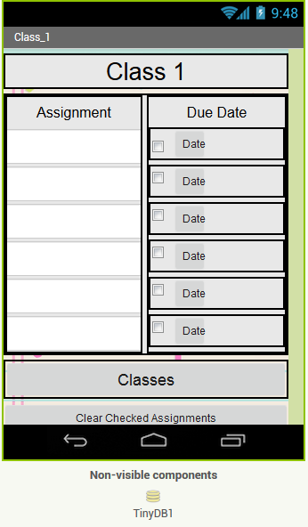
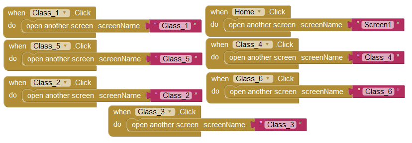
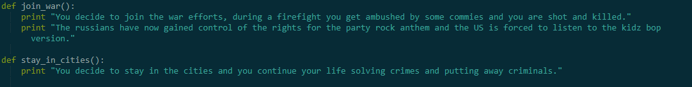
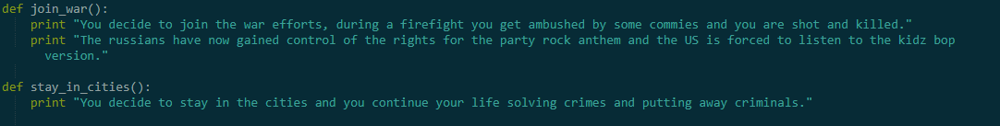

My partner Deo and I have created a game called Dungeon Master, this game is a platformer and has several levels with a boss fight at the end.
This next project was done by my partner Ismael and I, we created a pac-man themed maze, in this maze you collect cherries for bonus points and collect a key to open up the gate for the exit, we also added a timer to the maze.

This next project was a remix of a template project called Remix this dance 2, this was remixed by my partner Jonathan "jon jon" and I. We added two different faces which were Mitt Romney and Barack Obama and made them dance to a make up rap battle made by epic rap battles of history.

The next project is an app my partner David and I made which is used for an agenda/daily planner target="_blank" href="http://ai2.appinventor.mit.edu/?locale=en#5468072779186176> . We used the MIT app inventor to do this, in the code below we created the Home screen along with the classes. We also used the tinyDB function to store data such as dates and assignments that would be inputed by the user.
 
The next project was done in python, my partners Ismael, Nathan, and I were tasked with the request to create an interactive story. We created a story with many different choices which would lead to a few different endings. As you can see in the code below, each line of text would lead to a choice the user has to make, depending on the answer it would trigger a different text depending on the answer, this would continue until an end is reached. Two endings can be seen in the code, and end can be noticed easily because there is no following code to offer some kind of choice.

 

The next project was also done in python, the code was made in order to allow a user to do conversions between inches, feet, yards, and miles. As you can see in the code, there are conversions between inches, feet etc. We duplicated these codes and simply changed some numbers and changed them to suit whatever conversion the user needed.


The next project in python was the modification of a picture in some way. My partner noah and I took a picture of Ben Stiller, cropped his face in half and mirored it in order to make his face look symmetrical, we did this with both sides. In total this took about 6 functions to accomplish what we wanted, we had to crop the image, flip it, then place it next to the original, we had todo this twice.


After these converions the original image differed greatly as you can see below